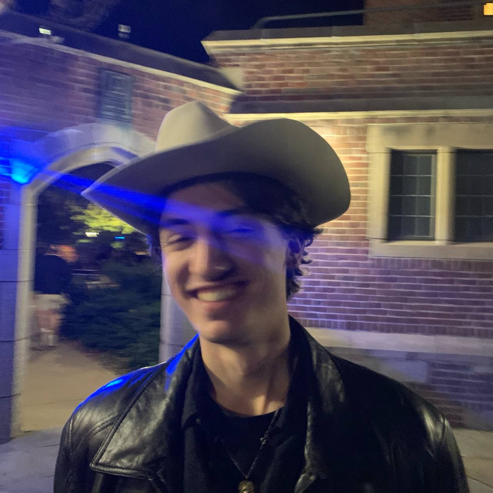

Harold Benoit
"In the stillness of the night, as jobs hum quietly across GPUs, the mind finds a rare serenity, knowing the work carries on without you."
I’m a Member of Technical Staff at Liquid AI.
I have a blog where I write down almost everything I learn.
In academia, I've previously done more "data-focused" research, exploring scalable ways to identify or synthetize high-quality data with the intent to render models more general and adaptable to new environments
News/Fun stuff:
Experience
 .
.Original
Publications

|
Controlled Training Data Generation with Diffusion Models
Teresa Yeo*, Andrei Atanov*, Harold Benoit^, Aleksandr Alekseev^, Ruchira Ray, Pooya Akhoondi, Amir Zamir In review, 2024 arXiv / Github / project page We propose a method to generate tailored synthetic training data, i.e., specifically useful for a given supervised model and target deployment domain. We introduce two feedback mechanisms to guide the generation: 1) model-based and 2) target domain-based. |


|
Unraveling the Key Components of OOD Generalization via
Diversification
Harold Benoit*, Liangze Jiang*, Andrei Atanov*, Oğuzhan Fatih Kar, Mattia Rigotti, Amir Zamir ICLR, 2024 arXiv / OpenReview We distill the critical design factors of current state-of-the-art methods (multi-hypotheses/diversification methods) for spurious correlation situations. |